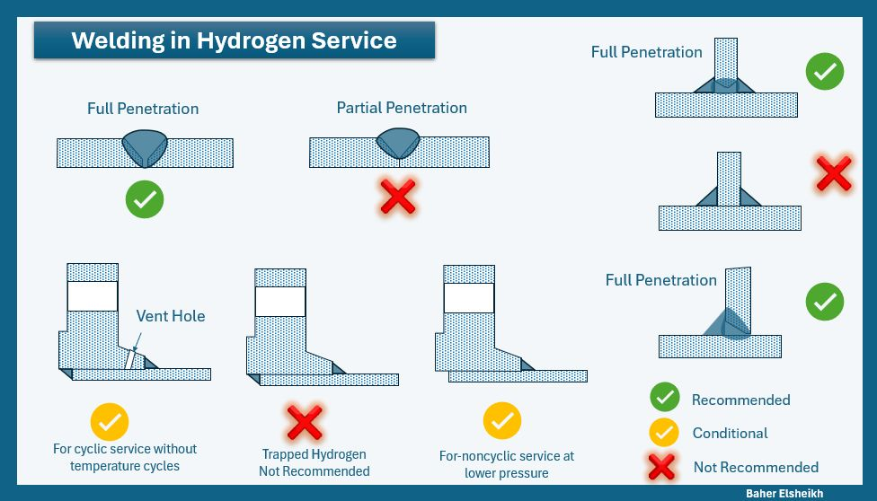

Full Penetration Welds for Hydrogen Service
In hydrogen service, a welded joint should leave no gap or void inside it. Hydrogen that diffuses into the steel can collect in such spaces and build up pressure, especially at shutdown. This is why full penetration welds are preferred, and why double-welded slip-on flanges need vent holes.
Hydrogen diffusion in metals
Hydrogen diffusion in metals is the movement of hydrogen atoms through the crystal lattice, where they occupy the interstitial spaces between the metal atoms. The process is driven by concentration gradients, temperature and stress, and it is influenced by the microstructure, grain size and alloy composition of the metal.
Why full penetration welds matter
In hydrogen service, welded joints should be full penetration, so that there are no gaps or voids where diffused hydrogen atoms can accumulate. Accumulated hydrogen can build up internal pressure in the enclosed space, particularly during shutdown, when the process pressure drops. This pressure can impose significant stress on the joint and increase the risk of cracking or failure.
Figure 1 shows typical examples. Full penetration butt and branch welds give complete fusion between the components, with no weak points or enclosed spaces. Partial penetration welds, and fillet-welded tee joints without full penetration, leave an unfused gap and are not recommended.

Special considerations for slip-on flanges
Slip-on flanges are common, but they need special consideration in hydrogen service. Their use is generally limited to smaller sizes and low pressure ratings (Class 150 and Class 300 only), and they are not recommended for lethal or cyclic services because of their inherent limitations.
When they are used in hydrogen service, slip-on flanges should be double welded to give sufficient joint strength. The space between the two fillet welds, however, is an enclosed gap where diffused hydrogen can collect and build up pressure. To reduce this risk, a vent hole into that space is recommended.
Relevant standards
Highlights the need to consider venting where leak testing is performed or where fluid diffusion could result in pressure build-up in an enclosed space.
Specifies that the space between the welds of double-welded slip-on flanges shall be vented for hydrogen service.
Summary
Use full penetration welds in hydrogen service so that no enclosed space is left for hydrogen to collect. Where double-welded slip-on flanges are used within their limits, vent the space between the welds.
References
- ASME B31.3, Process Piping, para. F308.2.
- ASME B31.12, Hydrogen Piping and Pipelines, para. IP-5.3.9.
This article is for general engineering guidance. Apply the edition of the governing code and the project specification, with the judgement of a qualified engineer.